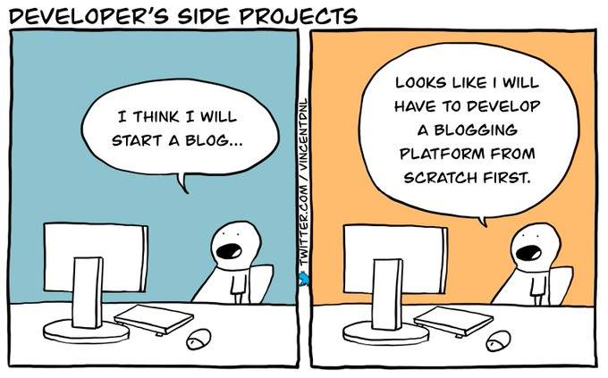

Gemtexter - One Bash script to rule it all
Published at 2021-06-05T19:03:32+01:00
o .,<>., o
|\/\/\/\/|
'========'
(_ SSSSSSs
)a'`SSSSSs
/_ SSSSSS
.=## SSSSS
.#### SSSSs
###::::SSSSS
.;:::""""SSS
.:;:' . . \\
.::/ ' .'|
.::( . |
:::) \
/\( /
/) ( |
.' \ . ./ /
_-' |\ . |
_..--.. . /"---\ | ` | . |
-=====================,' _ \=(*#(7.#####() | `/_.. , (
_.-''``';'-''-) ,. \ ' '+/// | .'/ \ ``-.) \
,' _.- (( `-' `._\ `` \_/_.' ) /`-._ ) |
,'\ ,' _.'.`:-. \.-' / <_L )" |
_/ `._,' ,')`; `-'`' | L / /
/ `. ,' ,|_/ / \ ( <_-' \
\ / `./ ' / /,' \ /|` `. |
)\ /`._ ,'`._.-\ |) \'
/ `.' )-'.-,' )__) |\ `|
: /`. `.._(--.`':`':/ \ ) \ \
|::::\ ,'/::;-)) / ( )`. |
||::::: . .::': :`-( |/ . |
||::::| . :| |==[]=: . - \
|||:::| : || : | | /\ ` |
___ ___ '|;:::| | |' \=[]=| / \ \
| /_ ||``|||::::: | ; | | | \_.'\_ `-.
: \_``[]--[]|::::'\_;' )-'..`._ .-'\``:: ` . \
\___.>`''-.||:.__,' SSt |_______`> <_____:::. . . \ _/
`+a:f:......jrei'''
You might have read my previous blog posts about entering the Geminispace, where I pointed out the benefits of having and maintaining an internet presence there. This whole site (the blog and all other pages) is composed in the Gemtext markup language.
This comes with the benefit that I can write content in my favourite text editor (Vim).
Motivation
Another benefit of using Gemini is that the Gemtext markup language is easy to parse. As my site is dual-hosted (Gemini+HTTP), I could, in theory, just write a shell script to deal with the conversion from Gemtext to HTML; there is no need for a full-featured programming language here. I have done a lot of Bash in the past, but I am also often revisiting old tools and techniques for refreshing and keeping the knowledge up to date here.

I have exactly done that - I wrote a Bash script, named Gemtexter, for that:
https://codeberg.org/snonux/gemtexter
In short, Gemtexter is a static site generator and blogging engine that uses Gemtext as its input format.
Output formats
Gemtexter takes the Gemtext Markup files as the input and generates the following outputs from it (you find examples for each of these output formats on the Gemtexter GitHub page):
- HTML files for my website
- Markdown files for a GitHub page
- A Gemtext Atom feed for my blog posts
- A Gemfeed for my blog posts (a particular feed format commonly used in Geminispace. The Gemfeed can be used as an alternative to the Atom feed).
- An HTML Atom feed of my blog posts
I could have done all of that with a more robust language than Bash (such as Perl, Ruby, Go...), but I didn't. The purpose of this exercise was to challenge what I can do with a "simple" Bash script and learn new things.
Taking it as far as I should, but no farther
The Bash is suitable very well for small scripts and ad-hoc automation on the command line. But it is for sure not a robust programming language. Writing this blog post, Gemtexter is nearing 1000 lines of code, which is actually a pretty large Bash script.
Modularization
I modularized the code so that each core functionality has its own file in ./lib. All the modules are included from the main Gemtexter script. For example, there is one module for HTML generation, one for Markdown generation, and so on.
paul in uranus in gemtexter on 🌱 main
❯ wc -l gemtexter lib/*
117 gemtexter
59 lib/assert.source.sh
128 lib/atomfeed.source.sh
64 lib/gemfeed.source.sh
161 lib/generate.source.sh
50 lib/git.source.sh
162 lib/html.source.sh
30 lib/log.source.sh
63 lib/md.source.sh
834 total
This way, the script could grow far beyond 1000 lines of code and still be maintainable. With more features, execution speed may slowly become a problem, though. I already notice that Gemtexter doesn't produce results instantly but requires few seconds of runtime already. That's not a problem yet, though.
Bash best practises and ShellCheck
While working on Gemtexter, I also had a look at the Google Shell Style Guide and wrote a blog post on that:
Personal bash coding style guide
I followed all these best practices, and in my opinion, the result is a pretty maintainable Bash script (given that you are fluent with all the sed and grep commands I used).
ShellCheck, a shell script analysis tool written in Haskell, is run on Gemtexter ensuring that all code is acceptable. I am pretty impressed with what ShellCheck found.
It, for example, detected "some_command | while read var; do ...; done" loops and hinted that these create a new subprocess for the while part. The result is that all variable modifications taking place in the while-subprocess won't reflect the primary Bash process. ShellSheck then recommended rewriting the loop so that no subprocess is spawned as "while read -r var; do ...; done < <(some_command)". ShellCheck also pointed out to add a "-r" to "read"; otherwise, there could be an issue with backspaces in the loop data.
Furthermore, ShellCheck recommended many more improvements. Declaration of unused variables and missing variable and string quotations were the most common ones. ShellSheck immensely helped to improve the robustness of the script.
https://shellcheck.net
Unit testing
There is a basic unit test module in ./lib/assert.source.sh, which is used for unit testing. I found this to be very beneficial for cross-platform development. For example, I noticed that some unit tests failed on macOS while everything still worked fine on my Fedora Linux laptop.
After digging a bit, I noticed that I had to install the GNU versions of the sed and grep commands on macOS and a newer version of the Bash to make all unit tests pass and Gemtexter work.
It has been proven quite helpful to have unit tests in place for the HTML part already when working on the Markdown generator part. To test the Markdown part, I copied the HTML unit tests and changed the expected outcome in the assertions. This way, I could implement the Markdown generator in a test-driven way (writing the test first and afterwards the implementation).
HTML unit test example
gemtext='=> http://example.org Description of the link'
assert::equals "$(generate::make_link html "$gemtext")" \
'<a class="textlink" href="http://example.org">Description of the link</a><br />'
Markdown unit test example
gemtext='=> http://example.org Description of the link'
assert::equals "$(generate::make_link md "$gemtext")" \
'[Description of the link](http://example.org) '
Handcrafted HTML styles
I had a look at some ready off the shelf CSS styles, but they all seemed too bloated. There is a whole industry selling CSS styles on the interweb. I preferred an effortless and minimalist style for the HTML site. So I handcrafted the Cascading Style Sheets manually with love and included them in the HTML header template.
For now, I have to re-generate all HTML files whenever the CSS changes. That should not be an issue now, but I might move the CSS into a separate file one day.
It's worth mentioning that all generated HTML files and Atom feeds pass the W3C validation tests.
Configurability
In case someone else than me wants to use Gemtexter for his own site, it is pretty much configurable. It is possible to specify your own configuration file and your own HTML templates. Have a look at the GitHub page for examples.
Future features
I could think of the following features added to a future version of Gemtexter:
- Templating of Gemtext files so that the .gmi files are generated from .gmi.tpl files. The template engine could do such things as an automatic table of contents and sitemap generation. It could also include the output of inlined shell code, e.g. a fortune quote.
- Add support for more output formats, such as Groff, PDF, plain text, Gopher, etc.
- External CSS file for HTML.
- Improve speed by introducing parallelism and/or concurrency and/or better caching.
Conclusion
It was quite a lot of fun writing Gemtexter. It's a relatively small project, but given that I worked on that in my spare time once in a while, it kept me busy for several weeks.
I finally revamped my personal internet site and started to blog again. I wanted the result to be exactly how it is now: A slightly retro-inspired internet site built for fun with unconventional tools.
Other related posts are:
2023-03-25 Gemtexter 2.0.0 - Let's Gemtext again^2
2022-08-27 Gemtexter 1.1.0 - Let's Gemtext again
2022-01-01 Bash Golf Part 2
2021-11-29 Bash Golf Part 1
2021-06-05 Gemtexter - One Bash script to rule it all (You are currently reading this)
2021-05-16 Personal Bash coding style guide
2021-04-24 Welcome to the Geminispace
E-Mail your comments to hi@paul.cyou :-)
Back to the main site